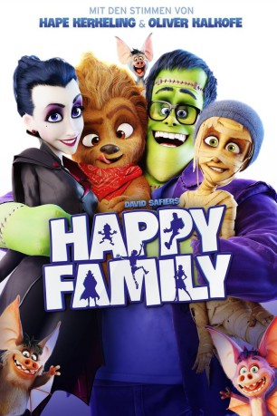

 
 IMDB-Wertung: 4.7 / 10
IMDB-Wertung: 4.7 / 10  Metascore:
Metascore: 
Familie Wünschmann ist nicht gerade glücklich: Die Buchhandlung von Mutter Emma macht nur Verluste, Vater Frank ist völlig überarbeitet und hat unter einem cholerischen Chef zu leiden, Tochter Fee ist gerade in einer besonders kritischen Phase ihrer Pubertät und Sohn Max ist zwar als echtes Wunderkind hochintelligent, wird aber genau deswegen in der Schule gehänselt. Dass die vier Familienmitglieder dann auch noch von der Hexe Baba Yaga verflucht werden und fortan als Monster durch die Gegend laufen, macht die Situation nicht besser. Als Vampir, Frankensteins Monster, Mumie und Werwolf jagen sie nun der fiesen Hexe um den halben Erdball hinterher, damit die den Fluch wieder rückgängig macht – und neben einigen echten Monstern wie etwa Graf Dracula und dessen Gehilfen Renfield finden sie dabei auch unverhofft zum Familienglück...
Jahr: 2017
Dauer: 93 Minuten
FSK: 0
Land: Deutschland Studio: Warner Bros.Tonspuren:
Untertitel:
Auflösung: 1080p (1920x808) Größe: 4864 MB
Genre: Horror, Komödie, Animation/Trick, Familie
Regisseur: Holger Tappe
Drehbuch: David Safier
Soundtrack: Hendrik Schwarzer
Darsteller:
Datei: X:\Kinder Filme (G-M)\Happy Family (2017, FSK0, 1920x808) 3D.mkv seit 12.03.2018
Festplatte: Kinder-Filme+Trick
 Es gibt insgesamt 84 Filme in der Gruppe 'Kinder Filme (G-M)'
Es gibt insgesamt 84 Filme in der Gruppe 'Kinder Filme (G-M)'